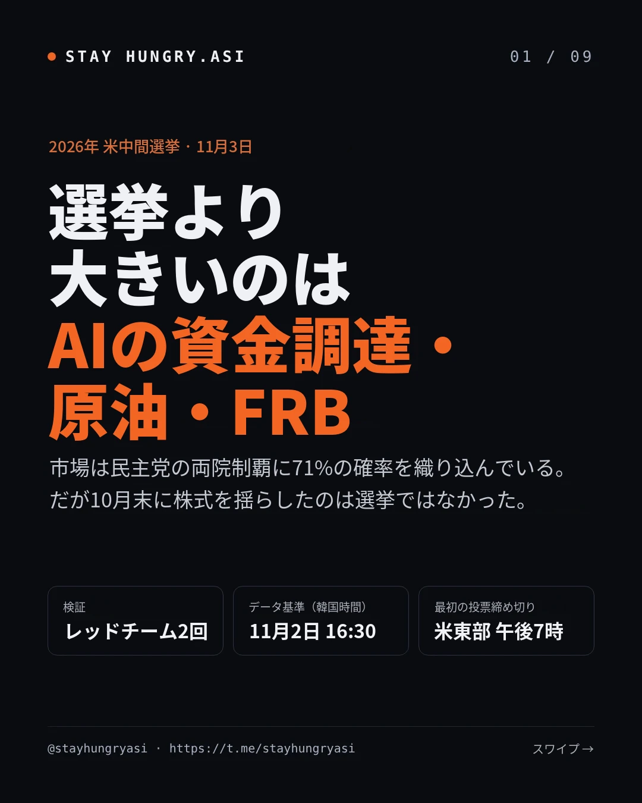
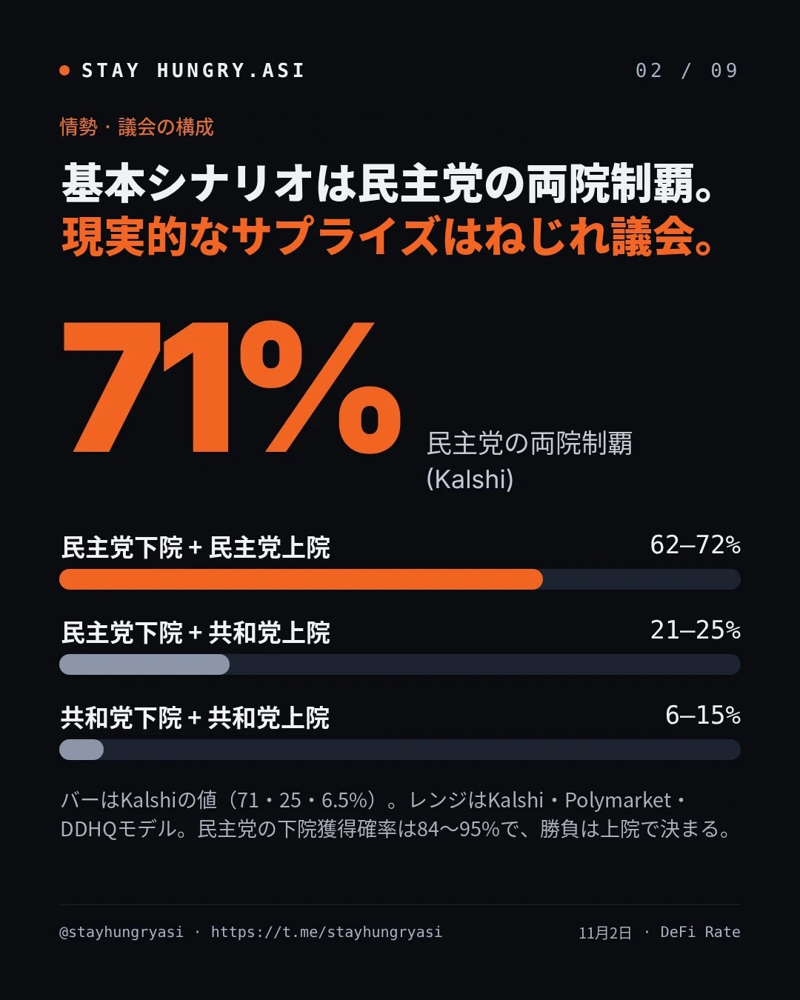
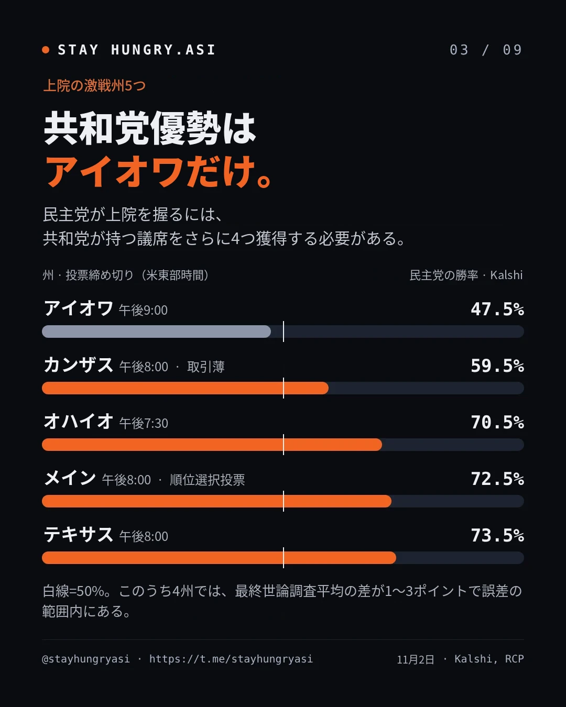
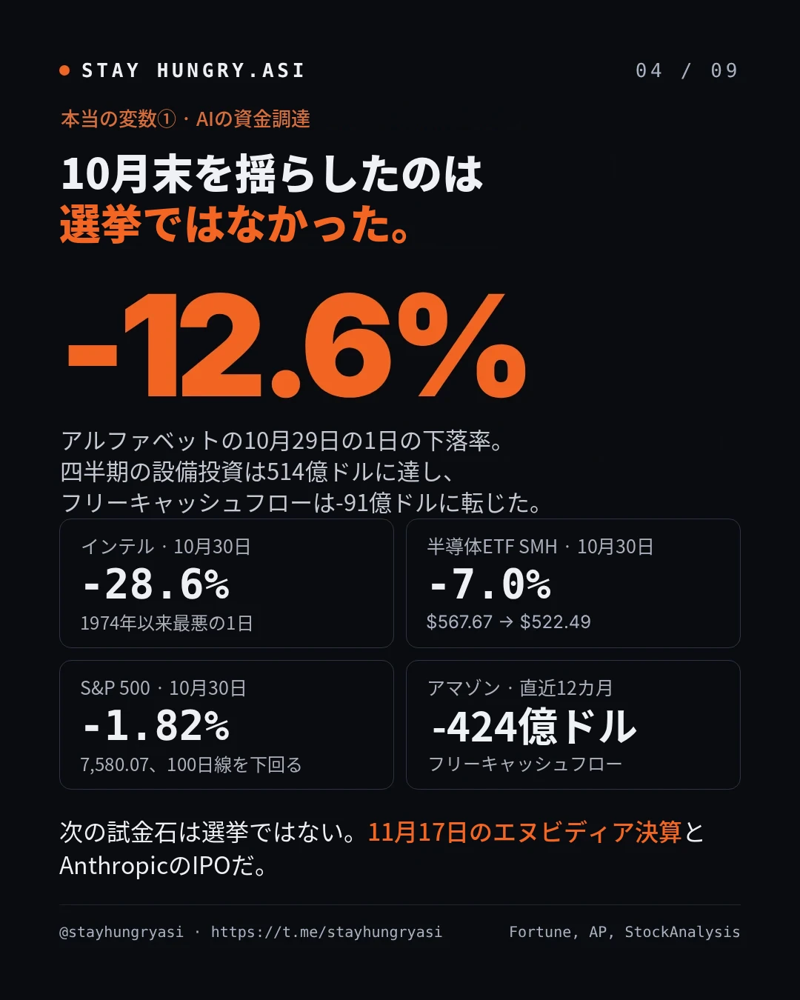
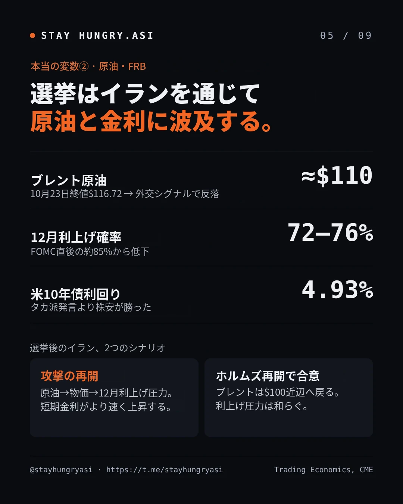
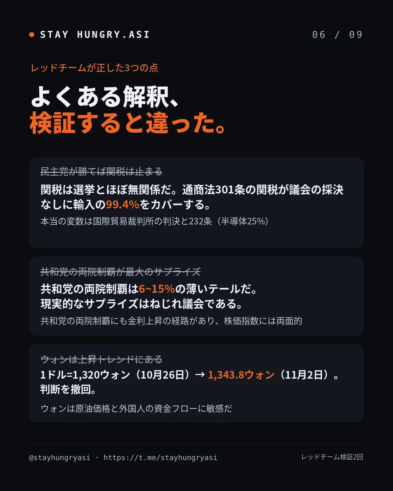
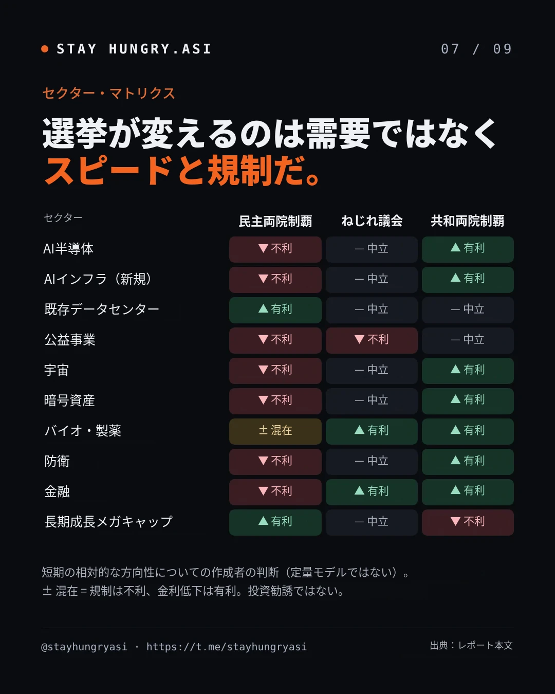
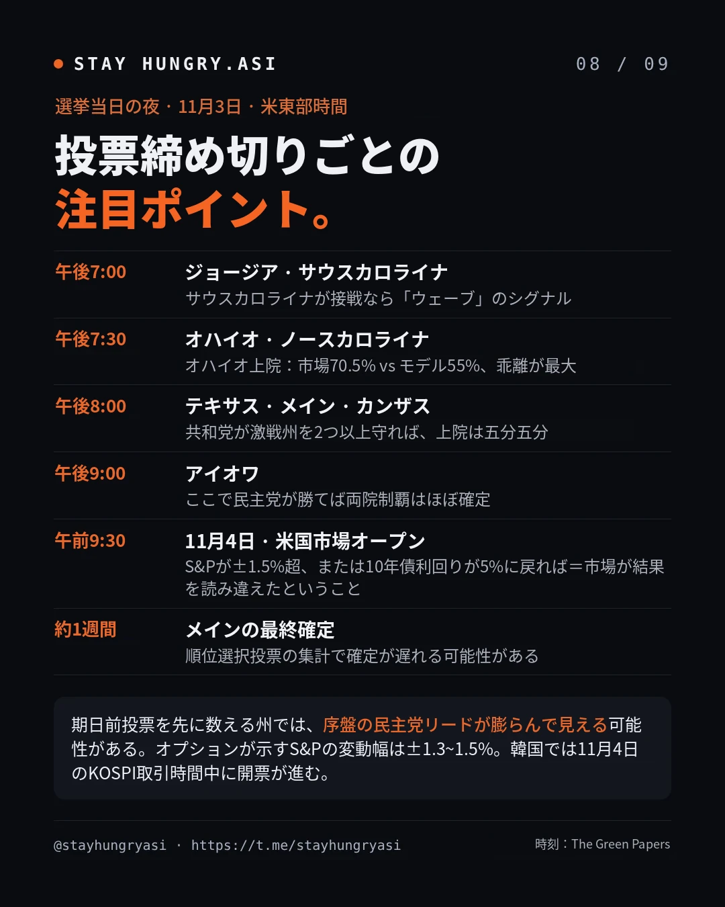
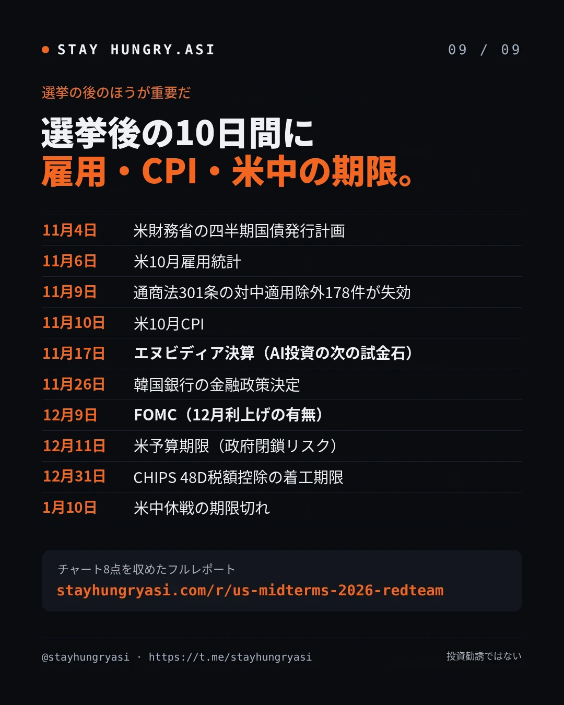

データ基準日 2026年11月2日16:30(韓国時間) · 1次検証 2026年10月29日 · stayhungryasi.com
表記ルール:確率は予測市場(Kalshi・Polymarket)とモデル(DDHQなど)を、出所と基準時刻を付けて区別した。「推定」「二次報道」「筆者判断」は最後のセクションにまとめた。
利益相反の開示: 本リサーチはAnthropicのAI(Claude)を用いて作成しており、本文の日程にAnthropicのIPOが登場する。投資勧誘ではない。
カードニュース9枚で見る
要点だけを9枚にまとめた。画像をクリックすると拡大して見られる。数値は11月2日16:30(韓国時間)時点である。


















主な結論(11/2更新)
選挙が決めるのは指数の方向よりも、セクターローテーションと「マクロショックのタイミング」である。いま指数を動かしているのは、AI投資の資金調達懸念、原油、FRBだ。
基本シナリオは民主党の両院制覇である。予測市場で71~72%、DDHQで62%と、大半が価格に織り込まれている。現実的なサプライズはねじれ議会(21~25%)で、共和党の両院制覇(6~15%)は薄いテールだ。
AI資金調達ショックは選挙より大きい。 アルファベット -12.6%、インテル -28.6%、10/30のS&P -1.82%は、選挙とは無関係なハイパースケーラーのキャッシュフロー懸念によるものだった。11/17のエヌビディア決算とAI大型IPOが次の審判の場となる。
マクロと選挙はイランを通じて結び付いている。 選挙後に攻撃があれば原油→物価→短期金利の上昇、ホルムズ再開で合意すればブレントは$100近辺となる。ただし10月末には株式の急落がタカ派発言に勝り、10年債利回りは4.93%まで低下した。
予算権限の重要な窓はレームダック会期(11~12月)である。 退任する共和党議会が12/11の期限と、債務上限引き上げの財政調整(リコンシリエーション)を扱う。民主党が勝てば、つなぎ延長で2027年の交渉力を残そうとする可能性がある。
共和党の両院制覇も両面的である。 金融・エネルギー・防衛には追い風だが、赤字がGDP比6.2%の状況での追加減税期待はタームプレミアムを押し上げ、長期成長株の重荷となる。基準線は10年債5.2%だ。
関税は選挙とほぼ無関係である。 通商法301条の強制労働関税が、議会の採決なしに輸入の99.4%をカバーしている。変数は、いつ出てもおかしくないCIT(国際貿易裁判所)判決と232条だ。
AIインフラの速度を決めるのは州・地方である。 知事選36州と地域の住民投票39件が同じ日に行われる。民主党が下院を取れば、AI特別委員会のヘッドラインが加わる。
韓国はメモリの数量が強いが、バリュエーションは米ビッグテックの資金調達に縛られている。 ウォンは1,343.8ウォンへと弱含み、原油に敏感な変数である。232条の半導体関税、CHIPS 48Dの着工期限(12/31)のほうが、選挙より直接的だ。
本文書は判断材料であり、投資勧誘ではない。筆者は投資顧問業者ではない。
D-1検証アップデート(11/2)
10月29日以降に市場を揺さぶったのは選挙ではなく、AI投資の資金調達ショックだった。選挙の確率は民主党側にさらに傾いた。 独立したレッドチーム2組が、11/2 16時30分(韓国時間)時点ですべての数値を原典で再確認した。以下の本文のチャートと表もこの値に更新した。
| 項目 | 10/29レポート | 11/2最新 | 判定 |
|---|---|---|---|
| 民主党の両院制覇(Kalshi / Polymarket / DDHQ) | 63.5 / 66 / 55% | 71 / 72 / 62% | コンセンサス強化 |
| 共和党の両院制覇(Kalshi / Polymarket / DDHQ) | 8.8 / 7 / 19% | 6.5 / 6 / 15% | テールはさらに薄く |
| 上院 民主党(Kalshi / DDHQ) | 64.2 / 58% | 71.0 / 64% | 民主党側へ移動 |
| S&P 500 | 7,743.98 (10/28) | 7,580.07 (10/30, -1.82%) | AIショック |
| ナスダック総合 | 26,549.85 | 25,437.00 (10/30, -2.86%) | 10月 -6.6% |
| 半導体ETF SMH | $567.67 | $522.49 (10/30, -7.0%) | インテル -28.6% |
| VIX | 16.91 | 19.42 (10/30) | 上昇 |
| 米10年債 | 5.04~5.05% | 4.93% | 株式急落で低下 |
| ブレント | $114~115 | 約$110 (11/2, -3%) | 外交シグナルで反落 |
| 12月利上げ確率 | 約85% | 約72~76% | 低下 |
| KOSPI | 6,012.44 (10/28) | 5,859.08 (11/2) | 10/30 -3.48%の後に反発 |
| ウォン/ドル | 1,331.6 | 1,343.8 (11/2) | ウォン高の判断は崩れた |
| エヌビディア決算 | 11/18(推定) | 11/17確定 | 訂正 |
| 中国のレアアース規制猶予 | 11/10満了 | 1/10まで延長との説、公式文書にレアアースの明記なし | 不確実 |
出所: DeFi Rate, DDHQ, AP via La Nación, StockAnalysis, Trading Economics, Political.org, Newspim, NVIDIA IR, Raw Materials
変わった判断6点
AI資金調達ショックが選挙を押しのけた。 アルファベットはフリーキャッシュフロー -91億ドル、四半期設備投資514億ドルを計上し、10/29に-12.6%下落した(Fortune)。アマゾンの直近12カ月フリーキャッシュフローは-424億ドルであり(SiliconANGLE)、S&Pはメタの信用見通しを「ネガティブ」に引き下げた(Investing.com)。
金利の経路は逆方向に動いた。 ローガン、ムサレム両総裁が追加利上げに言及したが、株式急落で10年債は4.93%まで低下した。10年債5%を再び見るには、原油と株式の反発がともに必要だ。
原油は選挙前にすでに上昇していた。 米国の攻撃がなくてもホルムズでの機雷・被弾でブレントは$115~118まで上昇し、その後トランプが外交にもっと時間を与えるとの報道で11/2に約$110へ下落した(The National)。選挙後に攻撃があればスタグフレーション型の短期金利上昇、ホルムズ再開で合意すれば$100近辺というのが両端である。
現実的なサプライズは共和党の両院制覇(6~15%)ではなく、ねじれ議会(21~25%)である。 コンセンサスは混み合っている。カンザスは一日で51%から59.5%へ跳ねるほど取引が薄い。
予算権限のタイミングが変わった。 12/11の予算期限は、退任する共和党議会が処理する。共和党はレームダック会期に、債務上限引き上げと国防費を盛り込んだ財政調整法案を検討中であり、X-dateは2027年末~2028年初めと推定される(Roll Call)。
韓国はメモリの数量は強いが、バリュエーションはハイパースケーラーの資金調達に縛られている。 10月の輸出は過去最大の1,153億ドル(+93.7%)、半導体は+259%だった。それでもKOSPIは10/30に-3.48%となり、ウォンは原油と外国人売りで弱含んだ(Korea Herald)。
選挙前夜のポジショニング
オプションが織り込んだ変動幅:11/4満期のS&Pオプションは約±1.3%(Saxo)、水曜日までのストラドルは1.51%(ゴールドマン)である。1990年以降、中間選挙翌日のS&Pの変動はおおむね1%未満だった(Saxo)。
VIXの期間構造:まだ正常(VIX9D 19.25 < VIX 19.42 < VIX3M 20.78)である。短期物が長期物を上回る逆転が起きればストレスのシグナルだ(TMAD)。
需給:BofAのCTA売り基準(約7,606)はすでに割れ、ディーラーのガンマはマイナス転換まで1%以内である。一方、S&P企業の約80%が今週金曜日までに自社株買いの禁止期間を抜ける(TheStreet Pro)。
開票パターンへの警告
序盤の民主党優勢は縮小しうる(推論)。 期日前投票は過去最大の4,960万票で、政党登録を集計する27州では民主党43%、共和党32%である(Newsweek)。期日前投票を先に数えるノースカロライナ・ジョージア・オハイオ・テキサスでは、序盤の民主党リードが当日投票で縮む可能性がある。カリフォルニア・アラスカはその逆だ。韓国の取引時間中のKalshi・先物の急変を過大に解釈すべきではない。
確定の遅れ:メインは順位選択投票が適用され(コリンズ vs トロイ・ジャクソン + 記名候補6人)、過去には約1週間かかった(FairVote)。アラスカは在外不在者票が15日、ジョージアは過半数に届かなければ12/1に決選投票となる。2022年の上院は選挙後の土曜日に確定した(PBS)。
訴訟のテール:司法省のアラスカ訴訟は11/1に原告適格なしとして却下され(Alaska's News Source)、LA郡の開票停止の申し立ても第1審と第9巡回区控訴裁判所の双方で棄却された。
レッドチーム1次検証の結果(10/29)
独立したレッドチーム2組(数値のファクトチェック、論理攻撃)が、直前の分析の論点4つを覆すか格下げし、数値4つを訂正した。 両チームは直前の分析を見ない状態で、ウェブ上の原典により検証した。
| 区分 | 直前の記述 | 判定 | 訂正 |
|---|---|---|---|
| 論点 | 民主党が片方の院を取るだけで一律関税を阻止できる | 誤り | 通商法301条の強制労働関税が、議会なしで輸入の約99%をカバー。関税は選挙とほぼ無関係 |
| 論点 | 共和党の両院制覇が過小評価された最大のサプライズ | 格下げ | Silver Bulletinのモデルはむしろ市場より民主党寄り。政治予測市場は優勢側をむしろ過小評価する傾向があるとの研究もある(arXiv) |
| 論点 | 共和党の両院制覇 = 一方的な追い風 | 補完 | 赤字・10年債5%の状況ではタームプレミアム上昇の経路があり、指数にとっては両面的 |
| 論点 | 民主党の両院制覇の経路 = 公聴会・ヘッドライン | 補完 | 核心は予算・債務上限の権限。2011年のねじれ議会による債務上限対立時にS&Pは約-19%(Kiplinger) |
| 論点 | マクロは選挙とは別の変数 | 補完 | 選挙がイラン攻撃のタイミングを決め、原油と連動する(Al Jazeera) |
| 論点 | ウォン安は原油のせい | 補完 | トレンドはウォン高(10/26に1,320ウォン、2024年10月以来の高値)。10/28の急騰は、FOMC前のドル高とイスラエル総選挙後の原油が重なった一日だけの反落 |
| 数値 | S&P 7,722 = 10/28の取引序盤 | 誤り | 10/27の終値。10/28の終値は7,743.98(Motley Fool) |
| 数値 | KOSPI 10/7 6,995 | 誤り | 10/7の終値は6,803.90。6,995.39は9/7の終値(Seoul Economic Daily) |
| 数値 | 10年債の高値 = 2002年4月以来の最高 | 誤り | 2002年5月以来の最高、高値は5.31~5.33% |
| 数値 | BofA「民主党の両院制覇なら-10%」(10月) | 出所が弱い | ハートネットの8月中旬の週次ノートで、二次報道でのみ確認。テキサス州知事などの条件が付いたテールシナリオ(PrimeXBT) |
| 数値 | エヌビディア決算 11/18 | 未確定 | 会社は未発表、推定値 |
| 数値 | 中間選挙後12カ月 +17%(ゴールドマン) | 出所が古い | 2022年のノートの統計。最新のBofA統計に差し替え(歴史的先例のセクション) |
情勢:予測市場 vs モデル(11/2更新)
下院は民主党84~95%で事実上の確定圏にあり、上院も民主党側にさらに傾いた。 10/29比で、すべての出所が民主党側に5~7%p移動した。モデル間の差も大きい。Silver Bulletinは市場より民主党寄り、Economist・DDHQは市場より保守的である。
| 出所 | 下院 民主党 | 上院 民主党 | 基準日 |
|---|---|---|---|
| Kalshi(予測市場) | 93.65% | 71.0% | 11/2 |
| Polymarket(予測市場) | 94.5% | 72.5% | 11/2 |
| DDHQ(モデル) | 84%(241議席) | 64%(52議席) | 11/2 |
| Silver Bulletin(モデル) | 95.1% | 77.7% | 10/29(最新値は有料) |
| VoteHub(モデル) | 89% | 63% | 10/30 |
| Economist(モデル) | — | 57.6% | 10/25 |
共和党の両院制覇は6~15%に縮小した。予測市場では、ねじれ議会(24~25%)が現実的なサプライズの方向である。
民主党が上院で過半数を得るには、共和党保有議席を差し引き4議席増やす必要がある(Covers)。アイオワは、市場(47.5%)とDDHQ(共和党53%)の双方が共和党優勢と見る唯一の激戦州である。市場とモデルの乖離が最も大きいのはオハイオ(15.5%p)だ。カンザスのKalshi価格は一日で8.5%p跳ねるほど取引が薄い。
最終世論調査平均(RCP、10/28~30):アイオワはヒンソン(共和党)+0.5、オハイオはブラウン(民主党)+2.6、テキサスはタラリコ(民主党)+2.1、メインはジャクソン(民主党)+1.4である。いずれも誤差の範囲内だ(270toWin, Marist)。
マクロ:選挙と絡み合う変数
指数は10月の史上最高値から押し戻され、今回押し下げているのは金利ではなく、AI投資の資金調達懸念である。 10/30のS&Pは、4月以来初めて100日移動平均を下回った(TheStreet)。一方、第3四半期GDPは3.4%と予想(3.1%)を上回り、9月のPCEは3.6%(コア3.1%)と物価は依然として高い(Trading Economics)。
| 指標 | 水準 | 基準日 |
|---|---|---|
| S&P 500 | 7,580.07(週間 -0.6%、史上最高の終値7,818.93は10/6) | 10/30終値 |
| ナスダック総合 | 25,437.00(10月6日の高値比 -7.8%) | 10/30終値 |
| 半導体ETF SMH | $522.49(一日で -7.0%) | 10/30終値 |
| VIX | 19.42(VIX9D 19.25、VIX3M 20.78) | 10/30終値 |
| 米10年債 | 4.93%(10月 -36bp、10月初めの高値5.31~5.33%) | 10/30~11/2 |
| ブレント | 約$110(10/23終値$116.72、週間上昇分を返上) | 11/2 |
| WTI | 約$100.6~101.0 | 11/2 |
| FRB政策金利 | 3.75~4.00%(10/28に10対2で据え置き) | — |
| 12月利上げ確率 | 約72~76%(FOMC 12/8~9) | 10/30 |
| ウォン/ドル | 1,343.8 | 11/2 |
| KOSPI | 5,859.08 | 11/2 |
出所:AP via La Nación(10/30終値)、StockAnalysis、TMAD、Political.org、Trading Economics、Newspim(11/2) / 10/28時点の資料: Fool, Cappnotes, Yahoo Finance, Trading Economics, Newsis, SBS
選挙→原油の経路は選挙後2~3週間以内に、予算の経路は12/11と2027年半ばの債務上限(41.1兆ドル、X-dateは2027年晩冬~2028年2月と推定)で作動する(NTU)。
シナリオツリーと非対称なペイオフ
サプライズの大きさは共和党の両院制覇(C)が最も大きいが、指数の方向は債券市場の反応次第である。 非対称性がはっきりしているのは指数ではなくセクターだ。
A(基本):歴史的に民主党の両院制覇は広範な株式にとって最善の結果であり、金融・ヘルスケアが出遅れたとの分析がある(Saxo)。BofAハートネットの「-10%」警告は条件付きのテールシナリオである。
C(テール):共和党の両院制覇の後には、金利上昇で株式が弱含んだ事例がある(Saxo)。赤字がGDP比6.2%の状況での「財政調整2.0」期待は、長期債の売りにつながりうる。
フィリバスター:トランプは廃止を推しており、CLARITY法は共和党4人の造反だけでも阻まれた(The Defiant, Election Law Blog)。共和党の両院制覇でも、立法上の制約は残る。
FRBの独立性:最高裁はクック理事を適正手続きなしに解任できないと判断し(6/29)、独立機関に関する判例を変更しつつもFRBは例外とした(Axios, DLA Piper)。上院の構成がFRBの独立性にもたらす制度的リスクは、懸念されるほど大きくない。
破壊的イノベーション・セクターマトリクス
選挙が変えるのはイノベーションセクターの需要ではなく、速度(許認可・規制・資本コスト)である。 民主党の両院制覇(A)では規制チャネルと金利チャネルが逆方向に動き、同じハイテク株でも高ベータのインフラとキャッシュフローの厚いメガキャップで方向が分かれる。
| セクター | 選挙が変えるもの | 主なレベル | 内部での差別化 |
|---|---|---|---|
| AI半導体 | 速度と対中輸出規制。需要(来年のAIインフラ投資1兆ドル+)は無関係(Reuters) | 連邦 | 高ベータ半導体株の選挙ベータが最大。SMHは年初来で約+57~58%(推定) |
| AIインフラ | 許認可の速度と電力コスト負担 | 州・地方 | 既存運営会社は価格決定力が上昇、新規開発・公益事業は不利 |
| 宇宙 | 契約配分と監督。マスクの政治資金は約3.66億ドル、今年のSpaceXの連邦受注は67.8億ドル(Digital Today) | 連邦(歳出権限) | 民主党下院ならSpaceX(SPCX)・テスラの契約に調査リスク。SPCXのロックアップ解除は12月初めと推定 |
| クリプト | 規制の枠組みを誰が書くか。CLARITY法の年内成立確率は6.5%(The Defiant) | 連邦 | 取引所・インフラ株は立法に敏感、ビットコインは金利に敏感 |
| バイオ・製薬 | 薬価とACA補助金(MarketBeat) | 連邦 | 大手製薬は薬価リスク、バイオテックは金利低下の恩恵 |
| 防衛 | 増額の速度とイラン作戦予算。FY27国防権限法は下院を通過、上院で審議中 | 連邦 | 自律・AI防衛は超党派の需要 |
関税・貿易:選挙とほぼ無関係な構造
訂正:一律関税は議会なしですでに復活している。 IEEPA関税の無効化(2/20)と122条の失効(7/24)の後、政権は7月23~24日に通商法301条の「強制労働」関税10~12.5%を課した(税率区分は60カ国、訴訟書面ベースの対象は86カ国)。輸入の99.4%をカバーし、議会の採決はなかった(Cleary Gottlieb, CRS)。韓国は12.5%で、韓米合意の上限15%以内である(Asia Economy)。歯止めとなるのは議会ではなく裁判所であり、25州が8月3日に国際貿易裁判所(CIT)に提訴した。9/30の弁論後も判決はまだ出ておらず、裁判官がUSTRにおおむね懐疑的だったとの報道がある(見出しのみ確認、ExFreight)。判決は選挙と無関係にいつでも出うる二者択一のイベントだ(Manufacturing Dive)。
| 関税手段 | 現状 | 選挙結果による変化 |
|---|---|---|
| 301条 強制労働(10~12.5%、輸入の99.4%) | 施行中、CIT訴訟が係属中 | ほぼなし。民主党議会でも拒否権のため廃止不可 |
| 232条 半導体(25%、2026年1月から) | 施行中、最大100%の脅し(Korea Times) | なし。行政府の裁量 |
| IEEPA(違憲) | 徴収額約1,660億ドルのうち8月までに約1,000億ドルを還付(Withers) | なし |
| 301条 中国向け除外178件 | 11/9 23:59 ETに失効、延長の告示なし(Thomson Reuters) | なし |
結論:関税リスクはどちらの党が勝ってもほぼ同じである。変数はCIT判決と232条の決定だ。
韓国の半導体:232条の25%に直接さらされる。「最恵待遇」条項はあるが、生産連動の免除はない。
米中の期限はそれぞれ別に進む:休戦は1月10日まで延長されたが、港湾手数料の猶予(USTRが1/9までの延長を提案、意見締切10/30、Holland & Knight)、中国のレアアース規制猶予(休戦とともに1/10まで延長との説、中国商務省の発表はレアアースを明記せず)、ガリウム・ゲルマニウム・アンチモンの緩和(11/27、Thomson Reuters)は別個の期限である。
財政の文脈:FY26の赤字は1.99兆ドル(GDP比6.2%)、利払い費は過去最大の1.36兆ドルである。純関税収入は11%減の1,730億ドルだった(BNN Bloomberg)。
AIインフラ:州・地方レベルの本当の投票用紙
データセンターの速度を決める票は、連邦議会ではなく、同じ日に行われる知事・公益事業委員会・地域の住民投票にある。 アナリストらは、民主党の両院制覇でもデータセンター建設を大きく妨げる連邦法が成立する可能性は低いと見ているが、公聴会や調査は増えると見ている(Reuters via Kitco)。
| レベル | 11/3に決まるもの | 市場への経路 |
|---|---|---|
| 連邦議会 | 調査・召喚権限。ジェフリーズ下院民主党院内総務が、召喚権を持つAI特別委員会を検討中(AI Weekly)。州AI法に対する連邦の専占(preemption)はすでに停滞(CASRAI) | モデル開発企業・ハイパースケーラーのヘッドライン・規制対応コスト |
| 知事選36州 | 大半の候補が拡大を支持 + 規制・地域管理を条件とし、無条件の支持は10人未満(MultiState) | 2027年の許認可・税制優遇 |
| 公益事業委員会 | データセンターの電力コストを誰が払うか | 公益事業の料金転嫁力 |
| 地域の住民投票 | 8州で39件、うちオハイオが21件。すでに決まった4件はいずれも規制強化の側(Newsweek) | 個別プロジェクトの遅延 |
反感は超党派である:9月の世論調査では、データセンター建設に反対61%、賛成34%で、共和党支持層でも47%が反対した(Arabian Post)。
すでに進行中:ニューヨーク州は米国初の州単位の建設モラトリアムに署名し、政権は共和党知事らに、電力・用水コストをデータセンターが負担する誓約を勧めている(The Week)。
先行指標:2025年のジョージア州公益事業委員会選挙では、ビッグテック優遇料金を批判した候補2人が現職を破った(inkl)。
二次的効果:新規供給が止まれば既存データセンター運営会社の価格決定力が高まり、新規開発企業と料金規制を受ける公益事業者が不利になる(Seeking Alpha)。
韓国市場への示唆と為替の経路
韓国はメモリの数量が過去最強だが、株価は選挙ではなく米ハイパースケーラーの資金調達懸念に揺さぶられている。 10/28の反発はSKハイニックスの第3四半期営業利益83.3兆ウォンと60兆ウォンの株主還元が牽引し(IBTimes)、10/30にはアルファベット・インテルのショックでSKハイニックス -8.45%、サムスン電子 -5.93%となった。サムスン電子の第3四半期(10/29発表)DS部門営業利益は106.5兆ウォンで、コンセンサスの108.5兆ウォンをわずかに下回った(サムスン電子, Financial News)。KOSPIは6/22の史上最高終値9,114.55から約36%下にある。
| 変数 | 現状 | 選挙との関係 |
|---|---|---|
| 10月の輸出 | 過去最大の1,153億ドル(+93.7%)、半導体 +259%(Korea Herald) | なし。メモリ需要は強い |
| 米ハイパースケーラーの資金調達 | アルファベット・アマゾンはフリーキャッシュフローが赤字、メタは信用見通しが引き下げ | 間接的。現在のKOSPIバリュエーションの最大の変数 |
| CHIPS 48D税額控除(35%) | 着工期限12/31。サムスンのテイラー、SKハイニックスのインディアナに直結(Holland & Knight) | 直接:レームダック会期での延長の有無 |
| 232条 半導体関税 | 25%、最大100%の脅し(Korea Times) | ほぼなし(行政府の裁量) |
| 韓米3,500億ドル投資(造船1,500億) | 韓国の特別法が3/12に成立、米議会の採決は不要(KEIA) | 弱い |
| 米中の期限 | 11/9 23:59 ET(301条除外178件)、11/27(ガリウムなど)、1/10(休戦、レアアースを含むとの説) | 間接的 |
| 韓国銀行 金融通貨委員会 | 11/26、利上げ予想(10/22に3.00%で据え置き)(Trading Economics) | 間接的 |
| ウォン/ドル | 10/26に1,320ウォン(2024年10月以来の高値) → 11/2に1,343.8ウォン(Newspim) | A:ドル安傾向、ただし原油と外国人の需給の影響のほうが大きい |
ウォン高トレンドの判断は撤回する。 10/26の1,320ウォンから11/2の1,343.8ウォンへと弱含んだ。11/2に外国人は3,680億ウォンの売り越し、機関は1.23兆ウォンの買い越しだった。ウォンは、原油と外国人の需給に敏感な変数と見るのが妥当である。
開票日のボラティリティの基礎値が大きい:直近5営業日で+6.6%、-1.2%、-3.5%、+2.2%が出た。米国の開票は韓国市場の取引時間中(11/4 09:00以降)に進む。
開票日の韓国のシグナル:ウォン/ドルの1,350ウォン突破と、ナスダック・半導体先物の-2%以上が重なれば、選挙よりもAI資金調達ショックが依然としてKOSPIを動かしているということだ。
選挙前後のイベントカレンダー
選挙後十日以内に、国債発行計画(11/4)、雇用(11/6)、CPIと米中の期限(11/9~10)が集中している。 2010年(QE2)や2022年(CPI)のように、選挙直後のマクロイベントが結果をかき消す可能性が高い。
出所:雇用・CPI(BLS)、国債発行(Treasury)、FOMC(Fattail)、レームダック・予算(Roll Call, Harvard OFR)、決算(Amazon, MacDailyNews, NVIDIA IR)、Anthropic S-1(SEC EDGAR)、SPCX(Wikipedia、ロックアップは上場日+180日で計算)、米中(Thomson Reuters, Raw Materials)。
開票日の韓国時間チェックリスト
11月4日(水)午前9時から午後3時まで、米国の開票のほぼすべてが韓国市場の取引時間中に進む。 サマータイムが11/1に終わったため、韓国時間 = 米東部 + 14時間である(The Green Papers)。オプションは11/4のS&Pの変動幅を±1.3~1.5%と見ている。序盤は期日前投票が先に集計されるため、民主党のリードが誇張される可能性がある(D-1セクション参照)。
| 韓国時間 | 米国の日程(東部) | 確認するもの(11/2 Kalshi 民主党 %) | 読み方 |
|---|---|---|---|
| 11/3 06:30 | アップル決算(11/2の引け後) | ビッグテックのセンチメント | AI資金調達懸念が続くかどうか |
| 11/4 09:00 | 午後7時:ジョージア、サウスカロライナ | サウスカロライナ上院(30.5%) | 民主党が接戦なら「ウェーブ」のシグナル |
| 09:30 | 7時30分:オハイオ、ノースカロライナ | オハイオ上院(70.5%、モデル55%) | 序盤の民主党優勢は当日投票で縮みうる |
| 10:00 | 8時:メイン、ペンシルベニア、テキサス・ミシガン・カンザスの大部分 | テキサス(73.5%)・メイン(72.5%)・カンザス(59.5%、流動性が薄い) | オハイオ・ノースカロライナ・テキサス・メインのうち共和党が2州を守れば、上院は五分五分に |
| 11:00 | 9時:アイオワ、ネブラスカ、アリゾナ | アイオワ上院(47.5%、唯一の共和党優勢の激戦州) | 民主党が勝てば民主党の両院制覇はほぼ確定 |
| 12:00~13:00 | ネバダ、カリフォルニア | 下院議席数の流れ | カリフォルニアは遅れて届く郵便投票で民主党側へ移動 |
| 14:00~15:00 | 午前零時:アラスカ | アラスカ上院(71.5%) | 在外不在者票15日、順位選択集計で確定が遅い |
| 15:30 | 韓国市場の引け | メインの1次集計で過半数に達するか、不服・訴訟の発言 | 順位選択集計の場合は約1週間 |
| 22:30 | 11/4 午前8時30分 | 財務省の四半期国債発行計画 | 長期債の供給縮小説を確認 |
| 23:30 | 米株式市場の寄り付き | S&P先物の±1.5%超え、VIX9D > VIXの逆転、10年債5.0%への復帰、ブレント | 一つでも出れば、市場が結果を誤って価格に織り込んだという意味 |
| 11/6 22:30 | 10月雇用統計(コンセンサス +6.5万人、失業率4.2%) | 雇用・賃金 | 12月利上げ確率の再調整 |
| 11/10 22:30 | 10月CPI | コア物価 | 2022年のように選挙より大きな一日になりうる |
| 11/18 07:00 | 11/17 午後5時 | エヌビディア決算(確定) | AI投資サイクルの次の審判の場 |
出所: DeFi Rate, Saxo, BLS, Treasury, NVIDIA IR, TheStreet Pro
開票前日(11/3)にアップル決算とKalshiの上院価格を確認
11/4の取引時間中、ウォン・ドルとKOSPI 200先物を同時にモニタリング
11/9~10の米中期限(301条除外、レアアース)の延長告示の有無を確認
歴史的先例と季節性
中間選挙後1年のリターンは歴史的に強かったが、選挙翌週に相場を動かしたのは結果よりも直後のマクロイベントだった。 最も近い先例は、新任の議長が利上げを進めていた2018年である。
| 年 | 選挙翌日・翌週 | 実際の要因 |
|---|---|---|
| 2022 | 11/9 -2.08%、11/10にCPIで+5.5% | 市場はレッドウェーブを織り込んだが外れた。CPIが結果をかき消した |
| 2018 | 11/7 +2.1% | 新任議長による利上げ。第4四半期中、12/24の安値まで約-20% |
| 2014 | 確認不可 | 特筆すべき要因なし |
| 2010 | 11/5の週 +3.6% | 11/3にQE2発表。2011年の債務上限対立で-19% |
| 2006 | 11/8 ダウが史上最高値 | 原油・金利・住宅。2007年の高値へ |
出所: Motley Fool, Fortune, Yahoo 2022, First Trust, Kiplinger
BofA(10/6):第2次世界大戦後、中間選挙後の6カ月・12カ月の期間は一度もマイナスにならず、平均は約+13%、+14%(InvestingLive)。
LSEG:1986年以降、10回すべてで52週リターンがプラス、平均+13.2%(Kaohoon)。
ゴールドマン:1974年以降、中間選挙の年の8/1~選挙日の中央値は0%、その後3カ月は+6%(Hellenic Shipping News)。
注意:季節性は弱い事前確率である。S&Pが史上最高値付近にあるため、「選挙後の安堵ラリー」の余地は過去の平均より小さい。
未検証の項目と限界
以下の項目は確定した事実ではなく、推定・二次報道・筆者判断である。 その他の数値は、各セクションのリンクで原典を確認した(独立したレッドチーム2組がクロスチェック)。
| 項目 | 状態(11/2) | 理由 |
|---|---|---|
| エヌビディア決算日 | 解決:11/17確定 | 会社が10/28に発表 |
| 財務省の四半期国債発行計画 | 解決:11/4確定 | 財務省の8/5の発表文。11/2の財源推計の発表日は未確認 |
| Anthropic IPO | S-1の公開提出(10/26)はSECの原典で確認 | 公募規模・バリュエーションはWSJ・ブルームバーグの報道でのみ確認(SEC EDGAR) |
| 中国のレアアース規制猶予の期限 | 不確実 | 11/10 vs 1/10。中国商務省の発表文にレアアースの明記なし |
| SPCXのロックアップ解除 12/9 | 推定 | 上場日(6/12) + 180日で計算 |
| BofAハートネットの「-10%」 | 二次報道 | 原典のノートにアクセス不可 |
| Silver Bulletinの最新値 | 10/29の数値を使用 | 10/30以降は有料。シルバー本人は「上院79」と発言 |
| 12月利上げ確率72~76% | 二次引用 | CME FedWatchへの直接アクセスに失敗、11/2の数値なし |
| ブレント 10/30の清算値 | 未確認 | 「$113超」としてのみ確認 |
| カンザスのKalshi 59.5% | 信頼度が低い | 一日で8.5%p移動、取引が薄い |
| CITの301条訴訟「懐疑的」 | 見出しのみ | MLexの本文にアクセス不可 |
| 開票順による序盤の民主党優勢 | 推論 | 期日前投票の比率と州別の集計順から推定 |
| セクターヒートマップの方向 | 筆者判断 | 根拠は本文の出所、定量モデルではない |
| 州別の再集計基準 | 未確認 | 州ごとに異なる、開票日に各州の選挙当局の告知を確認 |
本文書は判断材料であり、売買の勧誘ではない。筆者は投資顧問業者ではない。
政治に関する記述は、各党の政策経路が市場に及ぼす経路としてのみ扱い、どちらの結果が望ましいかは評価していない。
出所表記: stayhungryasi.com